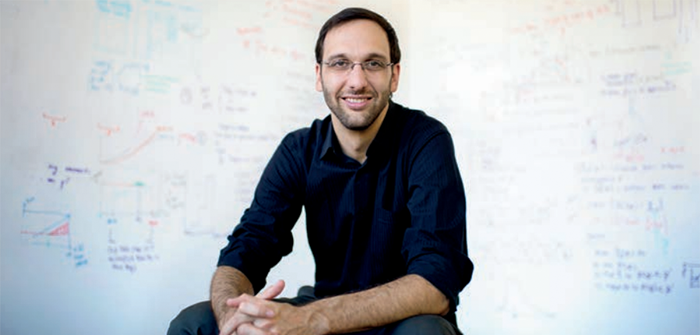

 I am an Associate Professor in the Computer Science department at George Washington University. I received my PhD. from Boston University under the direction of Professor Richard West. I lead the real-time systems, and Operating Systems groups at GWU.
Much of our research centers around the Composite component-based operating system. Fine grained system policies, mechanisms, and abstractions are defined as independent components, which are composed together to create a specialized and functional system. In doing so, a focus is on taking advantage of the increased system flexibility to bring predictability to cloud-scale systems, and rich functionality to embedded systems. Topics of interest include: